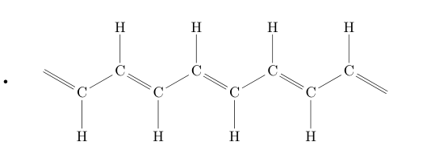
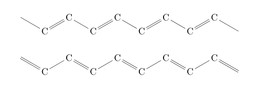
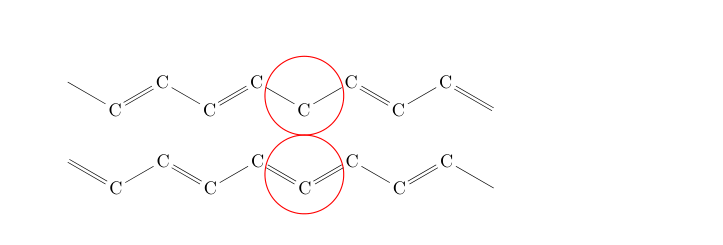
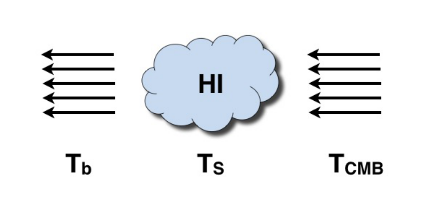
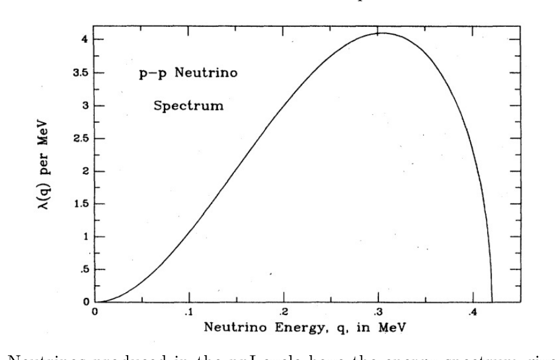
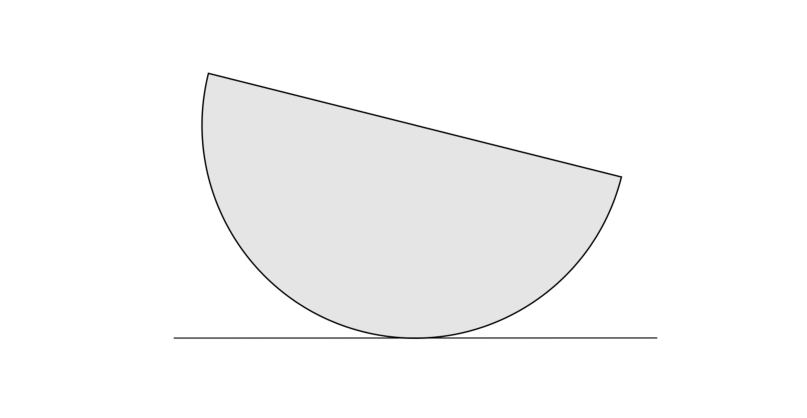
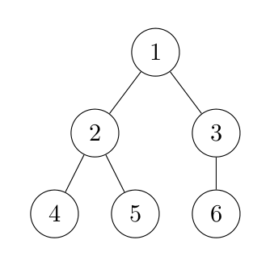

Harmonic Oscillator (prof. dr. sc. Hrvoje Buljan, University of Zagreb, Faculty of Science, Department of Physics)
Consider a quantum particle of mass and charge trapped in a two-dimensional () harmonic oscillator potential:
An infinite solenoid is piercing the plane at . The solenoid is infinitely thin; its magnetic field is .
-
Write down the Schrödinger equation for the particle if the vector potential (in polar coordinates ) is chosen to be . Consider a gauge transformation generated by the function : . What is the relation between the wavefunctions and , which are solutions of the Schrödinger equation in the gauge and , respectively? (3 points)
-
Consider a singular gauge transformation given by . Write the Schrödinger equation for the particle in this gauge. Find the boundary condition for the particle’s wavefunction when . Show that , where , satisfies this boundary condition for an appropriate value of . By using this fact, construct an eigenstate for this system in this gauge. Can you argue that this eigenstate is the ground state when the flux is sufficiently small? (4 points)
-
Write the wavefunction from the previous item in the gauge , and calculate the expectation value of the canonical and the physical angular momentum . (1 points)
-
If the solenoid current would be suddenly turned off to zero at , what would be the appropriate wavefunction to describe the system at . Calculate the expectation value of the canonical and the physical angular momentum at and explain the result. What would be the final state of the system if the flux is adiabatically turned off to zero? (2 points)
Fonte: Testo (PDF) — p.2 Topic: Modern-Quantum Physics, Electromagnetism Metodi: Differential Equations, Symmetry Argument, Torque & Angular Momentum Analysis, Superposition Principle Competenze: Mathematical Modeling, Physical Reasoning Objects: Solenoid
Oscillatore armonico (prof. dr. sc. Hrvoje Buljan, Università di Zagabria, Facoltà di Scienze, Dipartimento di Fisica)
Considera una particella quantistica di massa e carica intrappolata in un potenziale oscillatore armonico bidimensionale ():
Un solenoide infinito sta perfora il piano a . Il solenoide è infinitamente sottile; il suo campo magnetico è .
-
Scrivi l’equazione di Schrödinger per la particella se il potenziale vettoriale (in coordinate polari ) è scelto per essere . Si consideri una trasformazione del calibro generata dalla funzione : . Qual è la relazione tra le funzioni d’onda e , che sono rispettivamente soluzioni dell’equazione di Schrödinger nel calibro e ? **(3 punti) **
-
Si consideri una trasformazione singolare del calibro data da . Scrivi l’equazione di Schrödinger per la particella in questo calibro. Trova la condizione di confine per la funzione d’onda della particella quando . Indicare che , dove , soddisfa questa condizione di confine per un valore appropriato di . Usando questo fatto, costruire uno stato proprio per questo sistema in questo calibro. Puoi sostenere che questo stato eigen è lo stato di base quando il flusso è abbastanza piccolo? **(4 punti) **
-
Scrivere la funzione d’onda del punto precedente nel calibro e calcolare il valore di attesa del momento angolare canonico e fisico . **(1 punti) **
-
Se la corrente solenoide fosse improvvisamente spenta a zero a , quale sarebbe la funzione d’onda appropriata per descrivere il sistema a . Calcolare il valore di attesa del momento angolare canonico e fisico a e spiegare il risultato. Qual è lo stato finale del sistema se il flusso viene disattivato adiabaticamente a zero? **(2 punti) **
Fonte: Testo (PDF) — p.2 Topic: Modern-Quantum Physics, Electromagnetism Metodi: Differential Equations, Symmetry Argument, Torque & Angular Momentum Analysis, Superposition Principle Competenze: Mathematical Modeling, Physical Reasoning Objects: Solenoid
Trans-polyacetylene (prof. dr. sc. Ivo Batistić, University of Zagreb, Faculty of Science, Department of Physics)
Trans-polyacetylene is a polymer, a large molecule built of repeated units made of carbon and hydrogen units (CH), as it is shown in Figure (1):
Figure 1: Basic structure of trans-polyacetylene.

In the ground state, the polyacetylene is a dimerized chain with alternating short and long bonds between carbon atoms. The dimerization is a result of the Peierls instability. Each carbon atom has atomic orbital that is occupied by a single electron. There is an overlap between orbitals from the neighboring carbon atoms, which enables electrons to jump from one atom to another, and to propagate along the chain. The electron states to be addressed in this problem are composed of these orbitals. All other orbitals are fully occupied or empty and they can be neglected.
The atomic orbitals are not stationary states. The atomic orbitals make sense only for isolated atoms. For molecules, crystals or polymers the wave function of an electron can be approximated as a linear combination of atomic orbitals. Each atomic orbital enters the linear combination with a coefficient/an amplitude ( is the atomic index). In the tight-binding approximation (TBA), unknown amplitudes , satisfy the following equations (one-dimensional chain):
TBA equations represent the eigenvalue problem for the electron energies . is the probability of finding the electron at -th atom. is an amplitude for electron hopping from -th atom to -atom. Since the overlap between atomic orbitals depends on the distance between atoms, the hopping amplitudes, , are also distance dependent.
-
Apply tight-binding approximation to polyacetylene for the electrons in orbitals, and write down the corresponding TBA equations. (1 point) Apply the Bloch theorem to the wave functions amplitudes, and write down the eigenvalue problem for the periodic part of the Bloch wave function. (1 point) Find out how the electron energy, , depends on the wave number. (1 point) What is the energy gap between occupied and unoccupied states if hopping amplitudes for short and long bonds are eV and eV respectively. (1 point)
Hint: Polyacetylene is a dimerized chain with periodicity of two (CH)-units. The wave number should be defined with respect to the unit cell with two carbon atoms. Assume that there are two distinct hopping amplitudes for short and long bond, for example, and .
-
What is the average electron energy of undimerized polyacetylene. (1 point) Assume that hopping amplitude for undimerized chain is eV. What is the average electron energy of dimerized polyacetylene. (1 point)
Hint: Elliptic integral of the second kind
The asymptotic expansion for close but less than 1 ():
-
The polyacetylene is a topological insulator. A topologically different state is obtained when the long bond becomes short, and the short bond becomes long. The both topological states are shown in Figure (2):
Figure 2: Topologically different states of polyacetylene. For the sake of simplicity hydrogen atoms are omitted.

The Hamiltonian for the periodic part of the Bloch wave function can be written as:
Write down functions and . (1 point)
What is the winding number around the origin, , of the curve for each topological state, when is running over all wave vectors in the first Brillouin zone, from negative to positive values. (1 point)
Hint: Pauli matrices:
-
Consider polyacetylene chain with a defect separating two topological states, as it is shown in Figure (3):
Figure 3: Two types of topological defects (labeled with circles) in polyacetylene separating the different topological states.

Demonstrate the existence of the electron state with the energy (within the gap; also called edge state), localized around the defect for both defect types. (2 points)
Fonte: Testo (PDF) — p.3 Topic: Modern-Quantum Physics, Chemistry Metodi: Differential Equations, Approximation & Series Expansion, Symmetry Argument, Superposition Principle Competenze: Mathematical Modeling, Physical Reasoning Objects: Electron, Atom
**Trans-polyacetilene ** (prof. dr. sc. Ivo Batistić, Università di Zagabria, Facoltà di Scienze, Dipartimento di Fisica)
Il trans-polyacetilene è un polimero, una molecola grande costituita da unità ripetute di carbonio e di idrogeno (CH), come mostrato alla figura (1):
**Figura 1: ** Struttura di base di trans-poliacetilene.
In stato di base, il poliacetilene è una catena dimerizzata con legami alternativi brevi e lunghi tra atomi di carbonio. La dimerizzazione è il risultato dell’instabilità di Peierls. Ogni atomo di carbonio ha un’orbita atomica che è occupata da un singolo elettrone ****. C’è un sovrapposizione tra gli orbitali degli atomi di carbonio vicini, che consente agli elettroni di saltare da un atomo all’altro e di propagarsi lungo la catena. Gli stati elettronici da affrontare in questo problema sono composti da questi orbitali . Tutti gli altri orbitali sono completamente occupati o vuoti e possono essere trascurati.
Gli orbitali atomici non sono stati stazionari. Gli orbitali atomici hanno senso solo per gli atomi isolati. Per molecole, cristalli o polimeri la funzione d’onda di un elettrone può essere approssimata come una combinazione lineare di orbitali atomici. Ogni orbitale atomica entra nella combinazione lineare con un coefficiente/amplitudine ( è l’indice atomico). In approssimazione a stretto legame (TBA), le amplitudini sconosciute soddisfano le seguenti equazioni (catena unidimensional):
Le equazioni TBA rappresentano il problema del valore proprio per le energie degli elettroni . è la probabilità di trovare l’elettrone al -esimo atomo. è un’ampiezza per l’elettronico che salta da -th atom a -atom. Poiché il sovrapposizione tra gli orbitali atomici dipende dalla distanza tra gli atomi, le amplitudini di salto, , sono anche dipendenti dalla distanza.
- Applicare l’approssimazione a stretto legame al poliacetilene per gli elettroni in orbitali e annotare le corrispondenti equazioni TBA. **(1 punto) ** Applicare il teorema di Bloch alle amplitudini delle funzioni d’onda e scrivere il problema del valore proprio per la parte periodica della funzione d’onda di Bloch. **(1 punto) ** Scopri come l’energia degli elettroni, , dipende dal numero di onde. **(1 punto) ** Qual è il divario energetico tra gli stati occupati e quelli non occupati se le amplitudini di salto per i legami corti e lunghi sono rispettivamente eV e eV. **(1 punto) **
**Signore: ** Il poliacetilene è una catena dimerizzata con periodicità di due unità (CH). Il numero d’onda deve essere definito rispetto alla cellula di unità con due atomi di carbonio. Supponiamo che ci siano due distinte amplitudini di salto per il legame corto e lungo, ad esempio, e .
- Qual è l’energia media degli elettroni di ** polyacetilene non dimerizzato **. **(1 punto) ** Supponiamo che l’ampiezza di salto per la catena non dimerizzata sia eV. Qual è l’energia media degli elettroni del polyacetilene dimerizzato. **(1 punto) **
Signore: Integrale ellittica del secondo tipo
L’espansione asimptotica per vicino ma inferiore a 1 ():
- Il poliacetilene è un isolante topologico. Un stato topologicamente diverso viene ottenuto quando il legame lungo diventa breve e il legame breve diventa lungo. Entrambi gli stati topologici sono illustrati nella figura (2):
**Figura 2: ** Stati topologicamente diversi del poliacetilene. Per semplicità, gli atomi di idrogeno vengono omessi.
L’Hamiltonian per la parte periodica della funzione di onde di Bloch può essere scritto come:
Scrittore delle funzioni e . **(1 punto) **
Qual è il numero di curvatura intorno all’origine, , della curva per ogni stato topologico, quando corre su tutti i vettori d’onda nella prima zona di Brillouin, da valori negativi a valori positivi. **(1 punto) **
**Signore: ** Matrici Pauli:
- Considera la catena di poliacetilene con un difetto che separa due stati topologici, come mostrato alla figura (3):
**Figura 3: ** Due tipi di difetti topologici (etichettati con cerchi) nel poliacetilene che separano i diversi stati topologici.
Dimostrare l’esistenza dello stato di elettroni con l’energia (all’interno del gap; chiamato anche ** stato di bordo**), localizzata intorno al difetto per entrambi i tipi di difetto. **(2 punti) **
Fonte: Testo (PDF) — p.3 Topic: Modern-Quantum Physics, Chemistry Metodi: Differential Equations, Approximation & Series Expansion, Symmetry Argument, Superposition Principle Competenze: Mathematical Modeling, Physical Reasoning Objects: Electron, Atom
The Unruh effect (Grgur Šimunić, mag. phys., University of Zagreb, Faculty of Science, Department of Physics)
Consider a dimensional flat spacetime with coordinates and metric (we will use the term metric for the metric tensor, not the actual metric):
g_{ab} = -(\mathrm{d}t)_a(\mathrm{d}t)_b + (\mathrm{d}x)_a(\mathrm{d}x)_b. \tag{1}
Here (and in what follows) we use the abstract index notation to denote the tensor types and and are coordinate basis one-forms in cotangent space (an orthonormal manifold and the product of 1-forms is understood to be a tensor product). We are also using natural unit system (). Next, consider an observer moving with constant proper acceleration in this spacetime and let be the coordinates measured by this observer. Furthermore, let .
The purpose of this problem is to determine how this accelerated observer sees certain physical effects. To be more specific, if an inertial observer sees some physical system in a ground state, we will determine in what state will the accelerated observer see the same system. The physical system of interest here will be the system made of elementary particles which we describe by certain fields. Here we will only consider the simplest case of massless scalar particles.
-
Find the transition functions between the laboratory frame and the frame of the accelerated observer. Express the metric in the coordinates. Assume the following initial conditions for the accelerated observer:
x^a(\tau = 0) = \left(0, \frac{1}{a}\right), \tag{2}
\left.\frac{\mathrm{d}x^a}{\mathrm{d}\tau}\right|_{\tau = 0} = (1, 0). \tag{3}
(1 point)
-
Find the function such that the metric is proportional to and determine the proportionality factor (assume ). What are the transition functions between and frames? (1 point)
-
Consider a massless, real scalar field described by the action:
S[\phi] = -\frac{1}{2}\int \mathrm{d}^2x \sqrt{-g}\,g^{ab}\nabla_a\phi(x)\nabla_b\phi(x), \tag{4}
where denotes the determinant of the metric. Show that can be expressed in following form:
\phi(t,x) = \frac{1}{2\sqrt{\pi}}\int_{-\infty}^{\infty}\frac{\mathrm{d}k}{\sqrt{|k|}}\left(a_k^- e^{\mathrm{i}k x - \mathrm{i}|k|t} + a_k^+ e^{-\mathrm{i}k x + \mathrm{i}|k|t}\right), \tag{5}
\phi(\tau,\xi) = \frac{1}{2\sqrt{\pi}}\int_{-\infty}^{\infty}\frac{\mathrm{d}k}{\sqrt{|k|}}\left(b_k^- e^{\mathrm{i}k\xi - \mathrm{i}|k|\tau} + b_k^+ e^{-\mathrm{i}k\xi + \mathrm{i}|k|\tau}\right), \tag{6}
where . Are and independent? If so, explain why, and if not, determine the relation between them. (2 points)
-
Let us preform a quantization of this field by making operators. Assume canonical commutation relations:
[\phi(t,x),\phi(t,y)] = [\dot{\phi}(t,x),\dot{\phi}(t,y)] = 0, \tag{7}
[\phi(t,x),\dot{\phi}(t,y)] = \mathrm{i}\delta(x-y), \tag{8}
where dot denotes derivation with respect to . How do commutation relations look like in coordinates? What are commutation relations for and ? Which of these can be identified as creation operators, and which as annihilation operators? (1 point)
-
Express the field as a function of lightcone coordinates:
u = t - x, \ v = t + x, \tag{9}
\bar{u} = \tau - \bar{\xi}, \ \bar{v} = \tau + \bar{\xi}. \tag{10}
(1 point)
-
Show that the operator can be expressed as:
b_\Omega^- = \int_0^\infty \mathrm{d}\omega \sqrt{\frac{\Omega}{\omega}}\left(a_\omega^- F(\omega,\Omega) + a_\omega^+ F(-\omega,\Omega)\right), \tag{11}
where is some complex function of two variables. Determine the function . (1 point)
-
Define the vacua states for laboratory and accelerating observers. If the field is in the vacuum state of the laboratory observer, determine what is the particle density of particles with momentum that the accelerated observer measures. How can we interpret these results?
Hint: In order to compute , first show that and are proportional and determine the proportionality factor. (3 points)
Fonte: Testo (PDF) — p.6 Topic: Special Relativity, Modern-Quantum Physics Metodi: Lorentz Transformation, Wave Equation, Calculus-Integration, Symmetry Argument Competenze: Mathematical Modeling, Physical Reasoning Objects: —
L’effetto Unruh (Grgur Šimunić, mag. phys., University of Zagreb, Faculty of Science, Department of Physics)
Si consideri uno spaziotempo piatto di dimensione con coordinate e metrica (useremo il termine metrica per il tensore metrico, non per la metrica vera e propria):
g_{ab} = -(\mathrm{d}t)_a(\mathrm{d}t)_b + (\mathrm{d}x)_a(\mathrm{d}x)_b. \tag{1}
Qui (e in quel che segue) usiamo la notazione a indici astratti per denotare i tipi tensoriali e e sono uno-forme di base coordinata nello spazio cotangente (una varietà ortonormale e il prodotto di 1-forme si intende come prodotto tensoriale). Utilizziamo inoltre il sistema di unità naturali (). Consideriamo poi un osservatore che si muove con accelerazione propria costante in questo spaziotempo e siano le coordinate misurate da questo osservatore. Inoltre, sia .
Lo scopo di questo problema è determinare come questo osservatore accelerato vede certi effetti fisici. Più precisamente, se un osservatore inerziale vede un certo sistema fisico in uno stato fondamentale, determineremo in quale stato l’osservatore accelerato vedrà lo stesso sistema. Il sistema fisico di interesse qui sarà il sistema costituito da particelle elementari che descriviamo mediante certi campi. Qui considereremo solo il caso più semplice di particelle scalari prive di massa.
-
Trovare le funzioni di transizione tra il riferimento di laboratorio e il riferimento dell’osservatore accelerato. Esprimere la metrica nelle coordinate . Assumere le seguenti condizioni iniziali per l’osservatore accelerato:
x^a(\tau = 0) = \left(0, \frac{1}{a}\right), \tag{2}
\left.\frac{\mathrm{d}x^a}{\mathrm{d}\tau}\right|_{\tau = 0} = (1, 0). \tag{3}
(1 point)
-
Trovare la funzione tale che la metrica sia proporzionale a e determinare il fattore di proporzionalità (assumere ). Quali sono le funzioni di transizione tra i riferimenti e ? (1 point)
-
Si consideri un campo scalare reale privo di massa descritto dall’azione:
S[\phi] = -\frac{1}{2}\int \mathrm{d}^2x \sqrt{-g}\,g^{ab}\nabla_a\phi(x)\nabla_b\phi(x), \tag{4}
dove denota il determinante della metrica. Mostrare che può essere espresso nella forma seguente:
\phi(t,x) = \frac{1}{2\sqrt{\pi}}\int_{-\infty}^{\infty}\frac{\mathrm{d}k}{\sqrt{|k|}}\left(a_k^- e^{\mathrm{i}k x - \mathrm{i}|k|t} + a_k^+ e^{-\mathrm{i}k x + \mathrm{i}|k|t}\right), \tag{5}
\phi(\tau,\xi) = \frac{1}{2\sqrt{\pi}}\int_{-\infty}^{\infty}\frac{\mathrm{d}k}{\sqrt{|k|}}\left(b_k^- e^{\mathrm{i}k\xi - \mathrm{i}|k|\tau} + b_k^+ e^{-\mathrm{i}k\xi + \mathrm{i}|k|\tau}\right), \tag{6}
dove . Sono e indipendenti? In caso affermativo, spiegare perché; in caso negativo, determinare la relazione tra loro. (2 points)
-
Eseguiamo una quantizzazione di questo campo rendendo operatori. Assumere le relazioni di commutazione canoniche:
[\phi(t,x),\phi(t,y)] = [\dot{\phi}(t,x),\dot{\phi}(t,y)] = 0, \tag{7}
[\phi(t,x),\dot{\phi}(t,y)] = \mathrm{i}\delta(x-y), \tag{8}
dove il punto denota la derivazione rispetto a . Come appaiono le relazioni di commutazione nelle coordinate ? Quali sono le relazioni di commutazione per e ? Quali di questi si possono identificare come operatori di creazione e quali come operatori di distruzione? (1 point)
-
Esprimere il campo come funzione delle coordinate del cono luce:
u = t - x, \ v = t + x, \tag{9}
\bar{u} = \tau - \bar{\xi}, \ \bar{v} = \tau + \bar{\xi}. \tag{10}
(1 point)
-
Mostrare che l’operatore può essere espresso come:
b_\Omega^- = \int_0^\infty \mathrm{d}\omega \sqrt{\frac{\Omega}{\omega}}\left(a_\omega^- F(\omega,\Omega) + a_\omega^+ F(-\omega,\Omega)\right), \tag{11}
dove è una certa funzione complessa di due variabili. Determinare la funzione . (1 point)
-
Definire gli stati di vuoto per gli osservatori di laboratorio e accelerato. Se il campo è nello stato di vuoto dell’osservatore di laboratorio, determinare qual è la densità di particelle di particelle con impulso che l’osservatore accelerato misura. Come possiamo interpretare questi risultati?
Suggerimento: Per calcolare , mostrare dapprima che e sono proporzionali e determinare il fattore di proporzionalità. (3 points)
Fonte: Testo (PDF) — p.6 Topic: Special Relativity, Modern-Quantum Physics Metodi: Lorentz Transformation, Wave Equation, Calculus-Integration, Symmetry Argument Competenze: Mathematical Modeling, Physical Reasoning Objects: —
Redshifted 21-cm signal from the Epoch of Reionization (dr. sc. Vibor Jelić, Institute Ruđer Bošković)
A number of radio telescopes (e.g. LOFAR in the Netherlands; MWA in Australia; and HERA in South Africa) are aiming to detect the redshifted 21-cm hyperfine line of neutral hydrogen from the Epoch of Reionization (EoR), a pivotal period in the history of the Universe during which all-pervasive cosmic gas was ionized by radiation of the first “stars”.
-
Calculate the range of frequencies to which a radio telescope needs to be sensitive to detect the cosmological 21-cm signal. Current observational constraints suggest that the EoR occurred roughly within the redshifts of 6 and 15. (2 points)
-
Write down the equation of radiative transfer along a line of sight through a hydrogen cloud of optical depth , defined as the integral of the absorption coefficient along the path through the cloud. The brightness or specific intensity of emission emerging from the cloud at frequency should be quantified by the equivalent brightness temperature such that , where is the Planck function. For the background emission consider only the cosmic microwave background (CMB), emission of the universe as a black body. Assume the absence of any scattering along the path. For an illustration see Figure 1. (2 points)
-
Solve the equation of radiative transfer, yielding the brightness temperature of the emergent radiation at frequency . Assume uniform excitation temperature through a cloud. The excitation temperature of the 21 cm line is known as the spin temperature . The spin temperature is defined through the ratio between the number densities of hydrogen atoms in the two hyperfine levels (1S singlet, , and 1S triplet levels, ). Write down the equation for the spin temperature, if the ratio of the statistical degeneracy factors of the two levels is . (3 points)
-
What happens if the intervening cloud and the cosmic microwave background radiation are in thermodynamical equilibrium? Discuss if the measurement in such a case reveals anything interesting about the intervening cloud? If not, propose conditions in which the measurement will be successful. Explain why. (3 points)
Figure 4: An illustration of various components relevant for the radiative transfer problem: the background radiation (CMB) going through a hydrogen cloud of optical depth and emerging with the brightness temperature . The excitation temperature of the 21 cm line associated with the hydrogen cloud is known as the spin temperature .

Fonte: Testo (PDF) — p.8 Topic: Astrophysics, Thermodynamics Metodi: Differential Equations, Statistical Averaging, Photon Energy Relation, Calculus-Integration Competenze: Mathematical Modeling, Physical Reasoning Objects: Atom, Star
Signale di 21 cm spostato in rosso dell’epoca della reionizzazione sc. Vibor Jelić, Istituto Ruđer Bošković)
Numerosi radiotelescopi (es. LOFAR nei Paesi Bassi; MWA in Australia; e HERA in Sudafrica) mirano a rilevare la linea iperfina di idrogeno neutro di 21 cm spostata in rosso dall’Epoca della Reionizzazione (EoR), un periodo fondamentale nella storia dell’Universo durante il quale il gas cosmico onnipervasivo è stato ionizzato dalla radiazione delle prime “star”.
-
Calcolare l’intervallo di frequenze al quale un radiotelescopio deve essere sensibile per rilevare il segnale cosmologico di 21 cm. Le attuali limitazioni di osservazione suggeriscono che l’Eor si è verificata approssimativamente nei spostamenti rossi di 6 e 15. **(2 punti) **
-
Scrivere l’equazione del trasferimento radiativo lungo una linea di visione attraverso una nube di idrogeno di profondità ottica ** , definita come l’integrale del coefficiente di assorbimento lungo il percorso attraverso la nube. La luminosità * o l’intensità specifica * delle emissioni che emergono dalla nuvola a frequenza deve essere quantificata con la temperatura di luminosità * * equivalente a quella , dove è la funzione Planck. Per l’emissione di fondo si considera solo l’emissione di fondo cosmico a microonde (CMB), l’emissione dell’universo come corpo nero. Supponiamo l’assenza di dispersioni lungo il sentiero. Per un’illustrazione, vedere figura 1. **(2 punti) **
-
Risolvere l’equazione del trasferimento radiativo, ottenendo la temperatura di luminosità della radiazione emergente a frequenza . Supponiamo una temperatura di eccitazione uniforme attraverso una nuvola. La temperatura di eccitazione della linea di 21 cm è nota come temperatura di spin . La temperatura di spin è definita attraverso il rapporto tra le densità numeriche degli atomi di idrogeno nei due livelli iperfini (1 singolo S, , e livelli triplet 1S, ). Scrivere l’equazione per la temperatura di rotazione, se il rapporto dei fattori di degenerazione statistica dei due livelli è . **(3 punti) **
-
Cosa succede se la nuvola intermedia e la radiazione cosmica di fondo a microonde sono in equilibrio termodinamico? Parlate se la misurazione in un caso simile rivela qualcosa di interessante sulla nube che interviene? In caso contrario, proporre le condizioni in cui la misurazione avrà successo. Spiegate il motivo. **(3 punti) **
**Figura 4: ** Un’illustrazione dei vari componenti rilevanti per il problema del trasferimento radiativo: la radiazione di fondo (CMB) che attraversa una nube di idrogeno di profondità ottica e emerge con la temperatura di luminosità . La temperatura di eccitazione della linea di 21 cm associata alla nube di idrogeno è nota come temperatura di spin .
Fonte: Testo (PDF) — p.8 Topic: Astrophysics, Thermodynamics Metodi: Differential Equations, Statistical Averaging, Photon Energy Relation, Calculus-Integration Competenze: Mathematical Modeling, Physical Reasoning Objects: Atom, Star
Motion of point charge in the presence of the magnetic monopole (dr. sc. Bruno Klajn, University of Zagreb, Faculty of Science, Department of Physics)
During the undergraduate course in physics, the student is familiarized with physical systems of fundamental importance, such as the Kepler problem and the harmonic oscillator, both of which are exactly solvable. There is, however, an additional system on the same level of importance which is rarely mentioned in standard physics textbooks: it is the motion of point charge in the presence of a fixed magnetic monopole . In this problem, you will investigate some elementary properties of this system.
Let the magnetic monopole be fixed at the origin of coordinates so that it produces the magnetostatic field
with being the position vector of arbitrary point in space. A point particle of electric charge and is free to move in the presence of this field. Assume that all motion is nonrelativistic.
-
Demonstrate that the Lorentz force acting on the particle is perpendicular to its velocity, , and then, using this fact, show that the kinetic energy of the particle is a constant of motion. Furthermore, show that this implies that the particle always moves at constant speed, equal to its initial speed . (1 point)
-
Similarly, show that the Lorentz force is perpendicular to the instantaneous position of the particle, . Using this, and writing the position vector of the particle in terms of its magnitude and direction, , derive the differential equation for . Solve this equation with the initial conditions at , and . From the solution , determine the physical meaning of . (2 points)
-
Show that while the torque acting on the particle is nonvanishing, it can nevertheless be written as a derivative of a certain vector, , which implies that the conserved quantity for this motion is not the particle angular momentum itself, but rather the combination . Explicitly calculate the vector . Verify that the vector is, in fact, the angular momentum of the electromagnetic field defined by the integral
where is, in the nonrelativistic approximation, just the electrostatic field of charge . Conclude that the vector represents the total angular momentum of the system and calculate its magnitude in terms of known quantities and initial conditions. (3 points)
-
Now introduce the coordinate axes with the -axis pointing along the vector and use the standard spherical coordinates in what follows. Calculate the quantity and use it to find the time dependence of the zenith angle . In what kind of surface is the particle constrained to move? If so, identify the surface in question. (2 points)
-
Finally, from the expression determine the equation of motion for . Rewrite the obtained equation in the coordinate system introduced above and obtain the differential equation for the azimuthal angle . Solve the differential equation with the initial condition . (2 points)
After following these steps, you have found all constants of motion and calculated the trajectory of the particle. Therefore, you have completely solved the problem of charged particle motion in the presence of magnetic monopoles.
Fonte: Testo (PDF) — p.9 Topic: Magnetism, Newtonian Mechanics Metodi: Lorentz Force Analysis, Torque & Angular Momentum Analysis, Conservation Laws, Differential Equations Competenze: Physical Reasoning, Mathematical Modeling Objects: Point Charge, Magnet
Movimento della carica puntaria in presenza del monopolio magnetico (dr. sc. Bruno Klajn, Università di Zagabria, Facoltà di Scienze, Dipartimento di Fisica)
Durante il corso di laurea in fisica, lo studente si familiarizza con sistemi fisici di fondamentale importanza, come il problema di Kepler e l’oscillato armonico, entrambi esattamente risolvibili. C’è tuttavia un altro sistema di importanza simile, che raramente viene menzionato nei libri di fisica standard: è il movimento della carica puntaria in presenza di un monopolio magnetico fisso . In questo problema, esaminerete alcune proprietà elementari di questo sistema.
Il monopole magnetico deve essere fissato all’origine delle coordinate in modo da produrre il campo magnetostatico
con come vettore di posizione di un punto arbitrario nello spazio. Una particella puntata di carica elettrica e è libera di muoversi in presenza di questo campo. Supponiamo che tutto il movimento sia non relativistico.
-
Dimostra che la forza di Lorentz che agisce sulla particella è perpendicolare alla sua velocità, , e quindi, utilizzando questo fatto, dimostra che l’energia cinetica della particella è una costante di movimento. Inoltre, dimostrare che ciò implica che la particella si muove sempre a velocità costante, pari alla sua velocità iniziale . **(1 punto) **
-
Allo stesso modo, mostrare che la forza di Lorentz è perpendicolare alla posizione istantanea della particella, . Usando questo, e scrivendo il vettore di posizione della particella in termini di magnitudine e direzione, , derivi l’equazione differenziale per . Risolvi questa equazione con le condizioni iniziali a , e . Dal risolto , determinare il significato fisico di . **(2 punti) **
-
Mostrare che, sebbene la coppia che agisce sulla particella non sia scomparsa, può tuttavia essere scritta come derivata di un certo vettore, , il che implica che la quantità conservata per questo movimento non è la stessa momentum angolare della particella , ma piuttosto la combinazione . Calcolare esplicitamente il vettore . Verificare che il vettore sia, infatti, il momento angolare del campo elettromagnetico definito dall’integrale
in cui è, nell’approssimazione non relativistica, solo il campo elettrostatico di carica . Concludere che il vettore rappresenta il momento angolare totale del sistema e calcolare la sua magnitudine in termini di quantità e condizioni iniziali conosciute. **(3 punti) **
-
Ora introdurre gli assi di coordinate con l’asse che punta lungo il vettore e utilizzare le coordinate sferiche standard in quanto segue. Calcolare la quantità e utilizzarla per trovare la dipendenza temporale dell’angolo zenit . In che tipo di superficie la particella è costretta a muoversi? Se sì, identificate la superficie in questione. **(2 punti) **
-
Infine, dall’espressione si determina l’equazione di movimento per . Riscrivere l’equazione ottenuta nel sistema di coordinate introdotto sopra e ottenere l’equazione differenziale per l’angolo azimuthal . Risolvere l’equazione differenziale con la condizione iniziale . **(2 punti) **
Dopo aver seguito questi passaggi, hai trovato tutte le costanti di movimento e calcolato la traiettoria della particella. Pertanto, avete completamente risolto il problema del movimento delle particelle cariche in presenza di monopoli magnetici.
Fonte: Testo (PDF) — p.9 Topic: Magnetism, Newtonian Mechanics Metodi: Lorentz Force Analysis, Torque & Angular Momentum Analysis, Conservation Laws, Differential Equations Competenze: Physical Reasoning, Mathematical Modeling Objects: Point Charge, Magnet
Cosmic Magellan (prof. dr. sc. Krešimir Kumerički, University of Zagreb, Faculty of Science, Department of Physics)
Imagine that propagation of light through our homogenous and isotropic universe is described by the differential relativistic interval:
where is the radial coordinate (defined as comoving, which means that of a given object doesn’t change over time), and is the scale factor, which encodes expansion of the universe with time as
with being the speed of light and constant length parameter. We assume that the universe is closed and finite, with maximal value of equal to .
-
In this case we would in principle be able to see the whole picture of our galaxy somewhere on the night sky, thanks to its light travelling all the way around the universe. What would be the relative shift (redshift) of wavelengths of this light?
Hint: , where and denote times of emission and observation of light signals. (5 points)
-
Other galaxies we would be able to see at least twice: once via light taking the shorthest path, with redshift , and again, via light taking one turn around the universe, with redshift . Show that these two redshifts are related to the one from the (a) part as . (5 points)
Fonte: Testo (PDF) — p.11 Topic: Astrophysics, Special Relativity Metodi: Calculus-Integration, Differential Equations, Physical Modeling Competenze: Mathematical Modeling, Physical Reasoning Objects: —
Magellan Cosmico (prof. dr. sc. Krešimir Kumerički, Università di Zagabria, Facoltà di Scienze, Dipartimento di Fisica)
Immaginate che la propagazione della luce attraverso il nostro universo omogeneo e isotropo sia descritta dall’intervallo relativistico differenziale:
dove è la coordinata radial (definita come comoving, il che significa che di un dato oggetto non cambia nel tempo), e è il fattore di scala, che codifica l’espansione dell’universo con il tempo come
con che è la velocità della luce e parametro di lunghezza costante. Supponiamo che l’universo sia chiuso e finito, con valore massimo di uguale a .
- In questo caso saremmo in linea di principio in grado di vedere l’intero quadro della nostra galassia da qualche parte nel cielo notturno, grazie alla sua luce che viaggia tutto il percorso intorno all’universo. Qual sarebbe il spostamento relativo (schiffo rosso) delle lunghezze d’onda di questa luce?
*Signal: * , dove e indicano i tempi di emissione e di osservazione dei segnali luminosi. **(5 punti) **
- Altre galassie potremmo vedere almeno due volte: una volta attraverso la luce che prende il percorso più breve, con spostamento rosso , e di nuovo, attraverso la luce che fa una volta la volta intorno all’universo, con spostamento rosso . Indicare che questi due spostamenti rossi sono correlati a quello della parte (a) come . **(5 punti) **
Fonte: Testo (PDF) — p.11 Topic: Astrophysics, Special Relativity Metodi: Calculus-Integration, Differential Equations, Physical Modeling Competenze: Mathematical Modeling, Physical Reasoning Objects: —
Solar neutrinos (prof. dr. sc. Matko Milin, University of Zagreb, Faculty of Science, Department of Physics)
In cores of the Sun and similar stars, energy is mainly released through the so-called “ppI-cycle”, i.e. the following series of nuclear reactions:
Figure 5: Neutrinos produced in the ppI-cycle have the energy spectrum given in figure (taken from Bahcall and Ulrich, Rev. Mod. Phys. 60, 297, 1988.) - the integral of is here normalized to unity for measured in MeV.

The theory of beta-processes describes the curve in the figure approximately by the formula:
where is the Q-value of the first step in the cycle ( keV), and keV is the energy corresponding to the mass of the electron.
-
Find the average energy of the neutrinos produced in the cycle? (4 points) If you can’t calculate it, estimate it from the figure (as you’ll need it later).
-
Find the (average) energy that is added to the solar core material (plasma) for every produced He nucleus. The masses of the particles involved in the ppI-cycle are: , , , , . (2 points)
-
The so-called “solar constant” is the mean flux of solar electromagnetic radiation per unit area, measured on a surface perpendicular to the rays, one astronomical unit from the Sun (roughly the distance from the Sun to the Earth, km). It is easily measured to be . How much mass is converted into energy every second in the Sun, assuming that all the solar energy is coming from the ppI-cycle? (0.5 points) How many ppI-cycles happen every second? (0.5 points)
-
Assuming that the Sun will convert 10% of its initial hydrogen into helium during its evolution, estimate the lifetime of the Sun. The solar mass is kg and the initial mass of the hydrogen was of that number. (1 point)
-
How many neutrinos does the Sun emit every second? (0.5 points) What is the solar neutrino density flux (i.e. the number of neutrinos per second and per unit area perpendicular to their velocity) at Earth? (0.5 points) The obtained number corresponds to the upper limit of the flux of solar electron neutrinos (their number gets smaller due to the neutrino oscillations).
-
What is the energy flux (energy per unit area per unit time) associated with the solar neutrino density flux at Earth? (0.5 points) What share of total emitted energy comes from the Sun through neutrinos? (0.5 points)
Fonte: Testo (PDF) — p.12 Topic: Nuclear & Particle Physics, Astrophysics Metodi: Mass-Energy Equivalence, Calculus-Integration, Statistical Averaging, Order-of-Magnitude Estimation Competenze: Estimation & Approximation, Physical Reasoning Objects: Nucleus, Star
Nutrino solari (prof. dr. sc. Matko Milin, Università di Zagabria, Facoltà di Scienze, Dipartimento di Fisica)
Nei nuclei del Sole e delle stelle simili, l’energia viene rilasciata principalmente attraverso il cosiddetto “ciclo di pPI”, , cioè. le seguenti serie di reazioni nucleari:
**Figura 5: ** I neutrini prodotti nel ciclo ppI hanno lo spettro energetico indicato nella figura (tracciato da Bahcall e Ulrich, Rev. - Mod. Fisica. 60, 297, 1988.) - l’integrale di è qui normalizzato all’unità per misurata in MeV.
La teoria dei processi beta descrive la curva della figura approssimativamente con la formula:
dove è il valore Q del primo passo del ciclo ( keV), e keV è l’energia corrispondente alla massa dell’elettrone.
-
Trovare l’energia media dei neutrini prodotti nel ciclo? **(4 punti) ** Se non riesci a calcolarlo, stima la cifra (come avrai bisogno di più tardi).
-
Trova l’energia (media) che viene aggiunta al materiale del nucleo solare (plasma) per ogni nucleo He prodotto. Le masse delle particelle coinvolte nel ciclo ppI sono: , , , , . **(2 punti) **
-
La cosiddetta “constante solare” è il flusso medio della radiazione elettromagnetica solare per unità di area, misurata su una superficie perpendicolare ai raggi, una unità astronomica dal Sole (circa la distanza dal Sole alla Terra, km). È facilmente misurata a . Quanta massa viene convertita in energia ogni secondo nel Sole, supponendo che tutta l’energia solare proviene dal ciclo ppI? **(0,5 punti) ** Quanti cicli di PPI accadono ogni secondo? **(0,5 punti) **
-
Supponendo che il Sole convertirà il 10% del suo idrogeno iniziale in elio durante la sua evoluzione, stimare la durata della vita del Sole. La massa solare è kg e la massa iniziale dell’idrogeno è stata di tale numero. **(1 punto) **
-
Quanti neutrini emette il Sole ogni secondo? **(0,5 punti) ** Qual è il flusso di densità dei neutrini solari (, cioè. il numero di neutrini al secondo e per unità di superficie perpendicolare alla loro velocità) sulla Terra? **(0,5 punti) ** Il numero ottenuto corrisponde al limite superiore del flusso di neutrini elettroni solari (il loro numero diventa più piccolo a causa delle oscillazioni dei neutrini).
-
Qual è il flusso di energia (energia per unità di area per unità di tempo) associato al flusso di densità dei neutrini solari sulla Terra? **(0,5 punti) ** Quanta parte dell’energia totale emessa dal Sole proviene dai neutrini? **(0,5 punti) **
Fonte: Testo (PDF) — p.12 Topic: Nuclear & Particle Physics, Astrophysics Metodi: Mass-Energy Equivalence, Calculus-Integration, Statistical Averaging, Order-of-Magnitude Estimation Competenze: Estimation & Approximation, Physical Reasoning Objects: Nucleus, Star
Motion on a torus (prof. dr. sc. Tamara Nikšić, University of Zagreb, Faculty of Science, Department of Physics)
An ordinary ring torus embedded in three-dimensional space can be described by the parametric equations
for and (both and are positive constants). Some particle of mass is constrained to move on the surface of such a torus and is not subjected to external forces (e.g. gravity).
-
Write down the Lagrangian and equations of motion. (1 point)
-
Derive the constants of motion and reduce the equation of motion to the equivalent one-dimensional problem. (1 point)
-
Use the effective potential to discuss the qualitative nature of the orbits. Consider all possible cases. (3 points)
-
Assume that the energy of the particle equals ( denotes the generalized momentum) and that the particle starts from the point ( is arbitrary). Calculate the time needed for the particle to reach the position. (3 points)
-
Finally, assume that the homogeneous gravitational field is switched on and discuss qualitatively its influence on the particular orbits. (2 points)
Fonte: Testo (PDF) — p.14 Topic: Newtonian Mechanics, Conservation of Energy Metodi: Conservation Laws, Differential Equations, Energy Conservation Method, Calculus-Integration Competenze: Mathematical Modeling, Physical Reasoning Objects: —
Movimento su un toro (prof. dr. sc. Tamara Nikšić, Università di Zagabria, Facoltà di Scienze, Dipartimento di Fisica)
Un normale toro anello incastonato nello spazio tridimensionale può essere descritto dalle equazioni parametriche
per e (sia che sono costanti positive). Alcune particelle di massa sono costrette a muoversi sulla superficie di tale toro e non sono soggette a forze esterne (ad esempio: gravità).
-
Scrivi il Lagrangian e le equazioni di movimento. **(1 punto) **
-
Derivare le costanti di movimento e ridurre l’equazione di movimento al problema equivalente unidimensionale. **(1 punto) **
-
Utilizzare il potenziale efficace per discutere della natura qualitativa delle orbite. Considerate tutti i possibili casi. **(3 punti) **
-
Supponiamo che l’energia della particella sia uguale a ( indica il momento generalizzato) e che la particella parte dal punto ( è arbitrario). Calcolare il tempo necessario per raggiungere la posizione . **(3 punti) **
-
Infine, supponiamo che il campo gravitazionale omogeneo sia acceso e discutete qualitativamente della sua influenza sulle orbite particolari. **(2 punti) **
Fonte: Testo (PDF) — p.14 Topic: Newtonian Mechanics, Conservation of Energy Metodi: Conservation Laws, Differential Equations, Energy Conservation Method, Calculus-Integration Competenze: Mathematical Modeling, Physical Reasoning Objects: —
Almost oscillating (doc. dr. sc. Nikola Poljak, University of Zagreb, Faculty of Science, Department of Physics)
A solid (three-dimensional) semi-ball is placed on ice (in the homegeneous gravitational field ), so that there is absolutely no friction between the object and the surface as in the figure.

-
Determine the position of the center of mass of a semi-ball of radius of curvature . (1.5 points)
-
Determine the moment of inertia of the semi-ball around an axis passing through the center of mass which is perpendicular to the axis of symmetry of the semi-ball. The mass of the semi-ball is . (2.5 points)
-
Write down the total energy of the semi-ball while it is left to move on its own and describe the movement in words. (2 points)
-
The semi-ball will perform a movement that is almost oscillating. Write down the equation of motion of the semi-ball. (1.5 points)
-
The solution to this equation is very complicated, however, the semi-ball is almost oscillating. First, assume that the oscillations are small. Next, assume that the solution is given by . Plug this solution into the equation of motion and obtain the frequency of oscillation. is the angle between the axis of symmetry of the semi-ball and . (2.5 points)
Fonte: Testo (PDF) — p.15 Topic: Rotational Dynamics, Oscillations & Waves Metodi: Torque & Angular Momentum Analysis, Energy Conservation Method, Simple Harmonic Motion Analysis, Small-Angle Approximation Competenze: Physical Reasoning, Mathematical Modeling Objects: Sphere
**Quasi oscillante ** (doc. dr. sc. Nikola Poljak, Università di Zagabria, Facoltà di Scienze, Dipartimento di Fisica)
Una semibolla solida (tridimensionale) viene collocata sul ghiaccio (nel campo gravitazionale omogene ), in modo che non vi sia assolutamente alcun attrito tra l’oggetto e la superficie come nella figura.
-
Determinare la posizione del centro di massa di una semicolletta di raggio di curvatura . **(1,5 punti) **
-
Determinare il momento di inerzia della semipolla intorno ad un asse che attraversa il centro di massa perpendicolare all’asse di simmetria della semipolla. La massa della semicolora è . **(2,5 punti) **
-
Scrivi l’energia totale della semipolla mentre si muove da sola e descrivi il movimento in parole. **(2 punti) **
-
La semipolla eseguirà un movimento che oscilla quasi. Scrivi l’equazione di movimento della semicolletta. **(1,5 punti) **
-
La soluzione di questa equazione è molto complicata, tuttavia, la semicolo è quasi oscillante. Prima di tutto, supponiamo che le oscillazioni siano piccole. In seguito, supponiamo che la soluzione sia data da . Collegare questa soluzione nell’equazione del movimento e ottenere la frequenza di oscillazione. è l’angolo tra l’asse di simmetria della semicolora e . **(2,5 punti) **
Fonte: Testo (PDF) — p.15 Topic: Rotational Dynamics, Oscillations & Waves Metodi: Torque & Angular Momentum Analysis, Energy Conservation Method, Simple Harmonic Motion Analysis, Small-Angle Approximation Competenze: Physical Reasoning, Mathematical Modeling Objects: Sphere
Phase transitions in contagion models using complex networks (Matija Medvidović, mag. phys.; prof. dr. sc. Davor Horvatić, University of Zagreb, Faculty of Science, Department of Physics)
In this problem, we are going to calculate the time evolution of a complex network describing, for example, propagation of a disease through a population. To start things off, let us define a complex network as a graph for use in this problem. Graphs consist of:
- Vertices - labeled points in a plane, denoted by, for example,
- Edges - labeled lines connecting two vertices, denoted by, for example,
Graphs can be viewed as generalized and irregular crystal lattices. Their geometrical structure is captured by the adjacency matrix defined as:
A_{ij} = \begin{cases} 1 & \text{, if vertices } (i) \text{ and } (j) \text{ are connected by an edge} \\ 0 & \text{, otherwise} \end{cases} \tag{12}
Additionally, we assign a quantity called the degree to each vertex :
k_i = \sum_j A_{ij} \tag{13}
Simply put, is the number of edges attached to the vertex .

Statistical properties of networks are commonly described by the degree distribution - it is the probability that a randomly selected vertex from a given network will be of degree .
Consider a network with a general degree distribution . Let each vertex have an additional internal variable denoting its “activity” ( means the vertex is inactive and means it is active).
Interpret the vertices as individual persons and edges as “coming into contact” (geographical proximity, common workplace etc.). If the person is not affected by a disease (active) and it comes into contact with a sufficient number of sick people (inactive) then it may become sick itself.
Let us define the following processes of transferring the disease:
- A healthy person can become sick internally during the time interval with a constant probability .
- A healthy person can become sick externally during the time interval with probability if she/he has less or equal to healthy neighbors. We assume that the network is dense enough for to hold (social networks usually are).
- A sick person becomes healthy during the time interval with probability .
So, to summarize, we define two ways of getting sick, one certain way of becoming healthy again by introducing four parameters: probabilities , , and an integer defining the number of sick people one has to come in contact with in order to become sick.
Answer the following questions with the above described network representation of the problem:
-
Denote the number of sick people at time by in a population (network) of people and the fraction of sick people at time by . You can approximate the probability that a randomly chosen vertex is sick by .
Assuming that the sick and healthy people are well mixed in the network, write down the approximate probability of a randomly chosen vertex of degree (connected to other people) for the periodic part of the Bloch wave function. Find out the average probability of degree vertices to be exactly healthy vertices in its neighborhood in terms of , , and . Does the resulting distribution of have a name?
Taking that into account, what is the probability of there being less or equal to sick people in the neighborhood of that vertex? (1 point)
-
Using that result, write down the expected number of sick people at time using at the previous timestep . At each timestep, use
\varphi_m(x) = \langle\varphi_m^{(k)}(x)\rangle_k = \sum_k p_k\,\varphi_m^{(k)}(x) \tag{14}
as the probability a random vertex will have at less or equal to healthy neighbors. (2 points)
-
Once you have arrived at the discrete-time representation of the equation, show that by taking the limit one obtains the following dynamical equation for :
\frac{\mathrm{d}x}{\mathrm{d}t} = r(1-x)\varphi_m(x) + p(1-x) - qx \tag{15}
(1 point)
-
For simplicity, from now on assume that and that the underlying network is a regular graph: each vertex is of degree , exactly (it has neighbors). This is equivalent to the cubic lattice with dimensionality in condensed matter physics. What is the degree distribution of such a graph? Does this choice simplify the expression for ?
-
For , find the fixed points in parameter space defined by .
-
Write down the equation for fixed points in the case of . Does a nonzero solution always exist? Find the critical value at which the equation gets a nonzero solution for ? (3 points)
-
-
Finally, in the case of , define the critical exponents and by approximating near the critical point ( and , respectively):
x_s(r, p = 0)\propto|r - r_c|^\beta \tag{16}
x_s(r = r_c, p)\propto p^{1/\delta} \tag{17}
Hint: It is worth noticing that the value of is small near the critical point .
What are the values of and ? What is the order of such a phase transition? Briefly comment on the difference/similarity between these values and the well-known universal mean-field exponents often encountered in statistical physics. (3 points)
Fonte: Testo (PDF) — p.16 Topic: Thermodynamics, Mathematics Metodi: Statistical Averaging, Differential Equations, Approximation & Series Expansion, Physical Modeling Competenze: Mathematical Modeling, Physical Reasoning Objects: —
Pase transitions in modelli di contagio utilizzando reti complesse (Matija Medvidović, mag. - la fisica; dr. sc. Davor Horvatić, Università di Zagabria, Facoltà di Scienze, Dipartimento di Fisica)
In questo problema, calcoleremo l’evoluzione temporale di una rete complessa descrivendo, ad esempio, la propagazione di una malattia attraverso una popolazione. Per cominciare, definiamo una rete complessa come un grafico da usare in questo problema. I grafici sono composti da:
- Vertices - punti etichettati in un piano, indicati, ad esempio, da
- Edges - linee etichettate che collegano due vertici, indicate, ad esempio, da
I grafici possono essere considerati come reti cristalline generalizzate e irregolari. La loro struttura geometrica è catturata dalla matrice di adiacenza **** definita come:
A_{ij} = \begin{cases} 1 & \text{, if vertices } (i) \text{ and } (j) \text{ are connected by an edge} \\ 0 & \text{, otherwise} \end{cases} \tag{12}
Inoltre, assegnamo una quantità chiamata grado a ciascun vertice :
k_i = \sum_j A_{ij} \tag{13}
In poche parole, è il numero di bordi attaccati alla verticale .
Le proprietà statistiche delle reti sono comunemente descritte dalla distribuzione di gradi **** - è la probabilità che un vertice selezionato a caso da una data rete sarà di grado .
Considera una rete con una distribuzione generale di gradi . Ogni vertice deve avere una variabile interna aggiuntiva che indica la sua “attività” ( significa che il vertice è inattivo e significa che è attivo).
Interpretare i vertici come persone individuali e i bordi come “in contatto” (vicinanza geografica, luogo di lavoro comune, ecc.). Se la persona non è colpita da una malattia (attiva) e viene a contatto con un numero sufficiente di persone malate (inactive), allora può ammalarsi da sola.
Definciamo i seguenti processi di trasmissione della malattia:
- Una persona sana può ammalarsi ** internamente** durante l’ intervallo di tempo con una probabilità costante .
- Una persona sana può ammalarsi esterne durante l’ intervallo di tempo con probabilità se ha vicinati sani inferiori o uguali a . Supponiamo che la rete sia abbastanza densa da contenere (di solito le reti sociali lo sono).
- Una persona malata diventa sana durante l’ intervallo di tempo con probabilità .
Quindi, per riassumere, definiamo due modi di ammalarsi, un certo modo di tornare sani introducendo quattro parametri: probabilità , , e un numero intero che definisce il numero di persone malate con cui si deve entrare in contatto per ammalarsi.
Rispondere alle seguenti domande con la rappresentazione del problema descritta in rete:
- Indicare il numero di malati in tempo per in una popolazione (rete) di persone e la frazione di malati in tempo per . Si può approssimare la probabilità che un vertice scelto a caso sia malato da .
Supponendo che le persone malate e sane siano ben mescolate nella rete, annotare la probabilità approssimativa di un vertice scelto a caso di grado (connesso ad altre persone) per la parte periodica della funzione di onde di Bloch. Scopri la probabilità media che i vertici di grado siano **esattamente ** vertici sani nel proprio quartiere in termini di , e . La distribuzione di che ne deriva ha un nome?
Taking that into account, what is the probability of there being less or equal to sick people in the neighborhood of that vertex? **(1 punto) **
-
Con tale risultato, annotare il numero previsto di malati al tempo utilizzando al passo temporale precedente . In ogni fase, utilizzare
\varphi_m(x) = \langle\varphi_m^{(k)}(x)\rangle_k = \sum_k p_k\,\varphi_m^{(k)}(x) \tag{14}
come la probabilità che un vertice casuale abbia un soggetto sano di inferiore o uguale. **(2 punti) **
-
Una volta raggiunto il tempo di rappresentazione discreta dell’equazione, mostrare che prendendo il limite si ottiene la seguente equazione dinamica per :
\frac{\mathrm{d}x}{\mathrm{d}t} = r(1-x)\varphi_m(x) + p(1-x) - qx \tag{15}
**(1 punto) **
- Per semplicità, da ora in poi supponiamo che e che la rete sottostante sia un grafico regular: ogni vertice è di grado , esattamente (ha vicini). Questo è equivalente alla rete cubica con dimensione nella fisica della materia condensata. Qual è la distribuzione di gradi di un grafico del genere? Questa scelta semplifica l’espressione per ?
-
Per , trovare i punti fissi nello spazio parametrico definito da .
-
Scrivere l’equazione per i punti fissi nel caso di . Esiste sempre una soluzione non-zero? Trovare il valore critico al quale l’equazione ottiene una soluzione non zeri per ? **(3 punti) **
-
Infine, nel caso di , definire gli esponenti critici e approssimando vicino al punto critico ( e , rispettivamente):
x_s(r, p = 0)\propto|r - r_c|^\beta \tag{16}
x_s(r = r_c, p)\propto p^{1/\delta} \tag{17}
Signore: Vale la pena notare che il valore di è piccolo vicino al punto critico .
Quali sono i valori di e ? Qual è l’ordine di tale transizione di fase? Brevi commenti sulla differenza/similità tra questi valori e i ben noti esponenti di campo medio universale spesso incontrati nella fisica statistica. **(3 punti) **
Fonte: Testo (PDF) — p.16 Topic: Thermodynamics, Mathematics Metodi: Statistical Averaging, Differential Equations, Approximation & Series Expansion, Physical Modeling Competenze: Mathematical Modeling, Physical Reasoning Objects: —